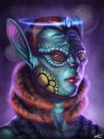
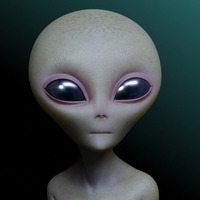
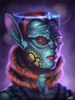
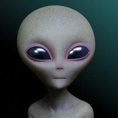
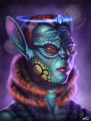
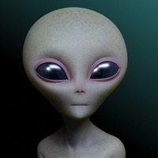
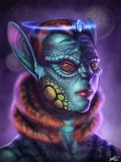
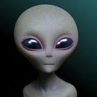

.jpg) 







Aliens Among us and Fears of the Other
If UFOs were visiting our world, where were these extraterrestrials? Could they be hidden among us? Comic books and television illustrates how the possibility of extraterrestrial visitors reflected anxieties of that era. The 1962 comic There are Martians Among Us, from Amazing Fantasy #15, illustrates the way fear of extraterrestrials could reflect Cold War anxieties. In the comic, a search party gathers around a landed alien craft, but it can find no sign of alien beings. Radio announcers warn those nearby to stay indoors. The action shifts to a husband and wife as he prepares to leave their home despite a television announcer's warning to remain indoors. As he waves goodbye he reminds his wife to stay inside. The wife however decides to slip out to the store and is attacked and dragged off. The husband returns home and finding it empty runs towards the telephone in a panic. In a twist, the anxious husband reveals that he and his wife are the Martians. The fear that there might be alien enemies in our midst resonates with fears of Soviets and communists from the McCarthy era. Ultimately, in this story, the humans are the ones who accost and capture the alien woman. The shift in perspective puts the humans in the position of the monsters.